Examples#
This gallery walks through every public feature of
engineeringkit.electrical_engineering, one breakthrough per script: DC
circuits and nodal analysis, equivalent networks, transients, AC circuits,
electronics, machines, transmission lines and power systems.
Units, assumptions and numerical validation
gives the physical validity limits. Each script is self-contained and can be
run directly with python examples/electrical_engineering/<section>/<script>.py.
Sections#
dc_circuits – Ohm’s law, Wheatstone’s bridge and Kirchhoff’s nodal analysis.
networks – Jacobi’s maximum power theorem, Thévenin and Norton equivalents.
transients – Kelvin’s telegraph cable, Helmholtz’s RL current rise and Kelvin’s oscillatory RLC discharge.
ac_circuits – Stanley’s transformer, Steinmetz’s phasors and Lodge’s resonance.
electronics – Ragazzini’s operational amplifier and Shockley’s diode with its load line.
machines – The Hopkinsons’ DC machine and Steinmetz’s induction motor equivalent circuit.
transmission_lines – Heaviside’s telegrapher’s equations and the Smith chart.
power – Tesla’s three-phase system, Fortescue’s symmetrical components and fault currents, Budeanu’s reactive power, swing curves and the equal-area criterion, and the Gauss-Seidel and Newton-Raphson load flows.
AC circuits#
Phasors, complex impedance, resonance and the transformer.
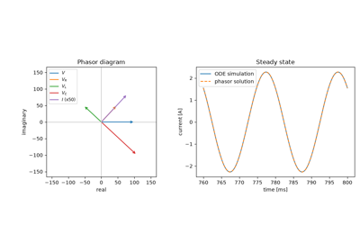
Steinmetz’s phasors and complex impedance (1893)
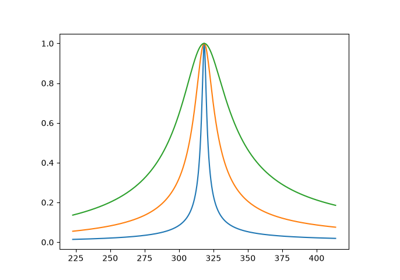
Lodge’s syntonic tuning: series resonance (1897)
DC circuits#
Ohm’s law, bridges and Kirchhoff’s laws for resistive networks.
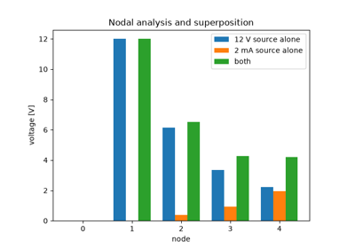
Kirchhoff’s circuit laws and nodal analysis (1845)
Electronics#
Ideal op-amp circuits, the junction diode and its load line.
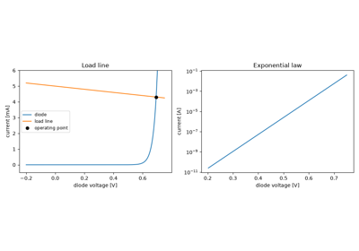
Shockley’s diode equation and the load line (1949)
Machines#
DC machine and induction motor equivalent circuits and their torque-speed curves.
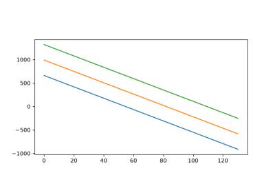
The Hopkinsons’ dynamo and the DC machine (1886)
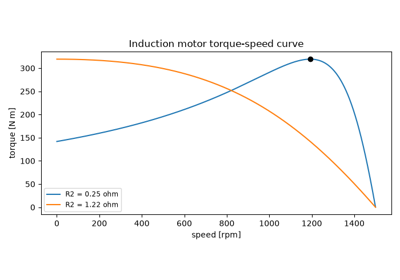
Steinmetz’s induction motor equivalent circuit (1897)
Networks#
Two-terminal equivalents and maximum power transfer.
Power#
Three-phase supply, reactive power, symmetrical components and faults, load flow and transient stability.
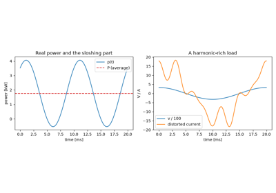
Budeanu’s reactive power and the power factor (1927)
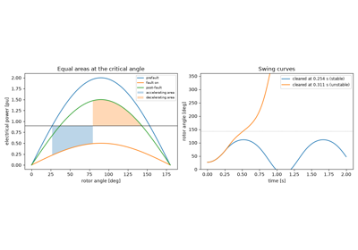
Swing curves and the equal-area criterion (1926)
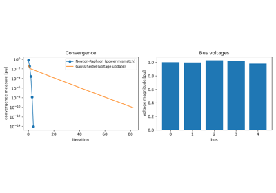
Tinney and Hart’s Newton-Raphson load flow (1967)
Transients#
First-order charging, the RL current rise and the second-order RLC step.
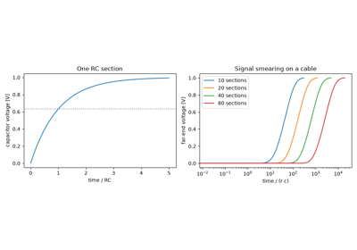
Kelvin’s telegraph cable and the RC time constant (1855)
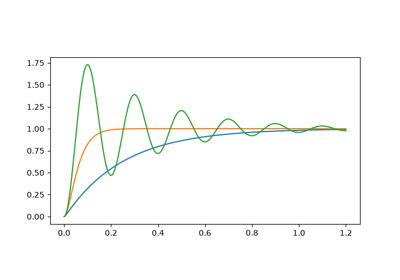
Kelvin’s oscillatory discharge and the RLC step response (1853)
Transmission lines#
Distributed lines, reflections and the Smith chart.
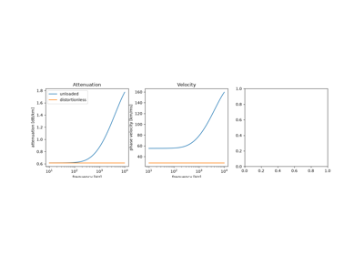
Heaviside’s telegrapher’s equations and the distortionless line (1876-1887)